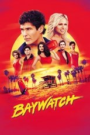

왓챠 드라마·시리즈498편 중 인기 60편
순서: 넷플릭스 한국 TOP10 에 든 작품을 먼저(최근에 든 순), 그다음은 TMDB 전 세계 인기도 순입니다 — 넷플릭스 외 서비스는 공식 순위를 공개하지 않습니다. 제공처는 JustWatch 자료(2026-09-23 확인)이며 가입 전 서비스에서 최종 확인하세요.
1 다음 생은 없으니까 Don’t Call Me Ma’am시리즈 · 2025 · 코미디 · 드라마 · 넷플릭스, 웨이브, 티빙에도넷플릭스 한국 최고 4위2
다음 생은 없으니까 Don’t Call Me Ma’am시리즈 · 2025 · 코미디 · 드라마 · 넷플릭스, 웨이브, 티빙에도넷플릭스 한국 최고 4위2 청담국제고등학교 Bitch and Rich시리즈 · 2023 · 드라마 · 미스터리 · 넷플릭스, 웨이브, 티빙에도넷플릭스 한국 최고 2위3미녀의 탄생 Birth of a Beauty시리즈 · 2014 · 코미디 · 넷플릭스에도넷플릭스 한국 최고 7위4
청담국제고등학교 Bitch and Rich시리즈 · 2023 · 드라마 · 미스터리 · 넷플릭스, 웨이브, 티빙에도넷플릭스 한국 최고 2위3미녀의 탄생 Birth of a Beauty시리즈 · 2014 · 코미디 · 넷플릭스에도넷플릭스 한국 최고 7위4 선의의 경쟁 Friendly Rivalry시리즈 · 2025 · 미스터리 · 드라마 · 넷플릭스, 웨이브, 티빙에도넷플릭스 한국 최고 4위5이판사판 Judge vs. Judge시리즈 · 2017 · 드라마 · 넷플릭스, 웨이브에도넷플릭스 한국 최고 10위6편의점 샛별이 Backstreet Rookie시리즈 · 2020 · 코미디 · 드라마 · 넷플릭스에도넷플릭스 한국 최고 10위7
선의의 경쟁 Friendly Rivalry시리즈 · 2025 · 미스터리 · 드라마 · 넷플릭스, 웨이브, 티빙에도넷플릭스 한국 최고 4위5이판사판 Judge vs. Judge시리즈 · 2017 · 드라마 · 넷플릭스, 웨이브에도넷플릭스 한국 최고 10위6편의점 샛별이 Backstreet Rookie시리즈 · 2020 · 코미디 · 드라마 · 넷플릭스에도넷플릭스 한국 최고 10위7 허식당 Heo's Diner시리즈 · 2025 · 드라마 · SF/판타지 · 넷플릭스, 웨이브, 티빙에도넷플릭스 한국 최고 4위8의사요한 Doctor John시리즈 · 2019 · 드라마 · 넷플릭스에도넷플릭스 한국 최고 4위9열혈사제 The Fiery Priest시리즈 · 2019 · 범죄 · 코미디 · 넷플릭스, 디즈니+에도넷플릭스 한국 최고 6위10
허식당 Heo's Diner시리즈 · 2025 · 드라마 · SF/판타지 · 넷플릭스, 웨이브, 티빙에도넷플릭스 한국 최고 4위8의사요한 Doctor John시리즈 · 2019 · 드라마 · 넷플릭스에도넷플릭스 한국 최고 4위9열혈사제 The Fiery Priest시리즈 · 2019 · 범죄 · 코미디 · 넷플릭스, 디즈니+에도넷플릭스 한국 최고 6위10 옥씨부인전 The Tale of Lady Ok시리즈 · 2024 · 드라마 · 넷플릭스, 웨이브, 티빙에도넷플릭스 한국 최고 1위11
옥씨부인전 The Tale of Lady Ok시리즈 · 2024 · 드라마 · 넷플릭스, 웨이브, 티빙에도넷플릭스 한국 최고 1위11 오늘도 지송합니다 sorry? not sorry!시리즈 · 2024 · 코미디 · 드라마 · 넷플릭스, 웨이브, 티빙에도넷플릭스 한국 최고 6위12
오늘도 지송합니다 sorry? not sorry!시리즈 · 2024 · 코미디 · 드라마 · 넷플릭스, 웨이브, 티빙에도넷플릭스 한국 최고 6위12 조립식 가족 Family by Choice시리즈 · 2024 · 드라마 · 가족 · 넷플릭스, 웨이브에도넷플릭스 한국 최고 4위13
조립식 가족 Family by Choice시리즈 · 2024 · 드라마 · 가족 · 넷플릭스, 웨이브에도넷플릭스 한국 최고 4위13 결혼해YOU Marry YOU시리즈 · 2024 · 드라마 · 코미디 · 넷플릭스, 웨이브, 티빙에도넷플릭스 한국 최고 9위14
결혼해YOU Marry YOU시리즈 · 2024 · 드라마 · 코미디 · 넷플릭스, 웨이브, 티빙에도넷플릭스 한국 최고 9위14 다리미 패밀리 Iron Family시리즈 · 2024 · 드라마 · 가족 · 넷플릭스, 웨이브에도넷플릭스 한국 최고 6위15
다리미 패밀리 Iron Family시리즈 · 2024 · 드라마 · 가족 · 넷플릭스, 웨이브에도넷플릭스 한국 최고 6위15 놀아주는 여자 My Sweet Mobster시리즈 · 2024 · 드라마 · 코미디 · 넷플릭스, 웨이브, 티빙에도넷플릭스 한국 최고 9위16
놀아주는 여자 My Sweet Mobster시리즈 · 2024 · 드라마 · 코미디 · 넷플릭스, 웨이브, 티빙에도넷플릭스 한국 최고 9위16 끝내주는 해결사 Queen of Divorce시리즈 · 2024 · 드라마 · 범죄 · 넷플릭스, 웨이브, 티빙에도넷플릭스 한국 최고 5위17
끝내주는 해결사 Queen of Divorce시리즈 · 2024 · 드라마 · 범죄 · 넷플릭스, 웨이브, 티빙에도넷플릭스 한국 최고 5위17 아이 러브 유 Eye Love You시리즈 · 2024 · 드라마 · SF/판타지 · 넷플릭스, 웨이브, 티빙에도넷플릭스 한국 최고 4위18
아이 러브 유 Eye Love You시리즈 · 2024 · 드라마 · SF/판타지 · 넷플릭스, 웨이브, 티빙에도넷플릭스 한국 최고 4위18 나의 해피엔드 My Happy Ending시리즈 · 2023 · 미스터리 · 드라마 · 넷플릭스, 웨이브, 티빙에도넷플릭스 한국 최고 4위19
나의 해피엔드 My Happy Ending시리즈 · 2023 · 미스터리 · 드라마 · 넷플릭스, 웨이브, 티빙에도넷플릭스 한국 최고 4위19 고려 거란 전쟁 Korea-Khitan War시리즈 · 2023 · 드라마 · 전쟁 · 넷플릭스, 웨이브에도넷플릭스 한국 최고 3위20
고려 거란 전쟁 Korea-Khitan War시리즈 · 2023 · 드라마 · 전쟁 · 넷플릭스, 웨이브에도넷플릭스 한국 최고 3위20 밤이 되었습니다 Night Has Come시리즈 · 2023 · 드라마 · 미스터리 · 넷플릭스, 웨이브, 티빙에도넷플릭스 한국 최고 4위21
밤이 되었습니다 Night Has Come시리즈 · 2023 · 드라마 · 미스터리 · 넷플릭스, 웨이브, 티빙에도넷플릭스 한국 최고 4위21 오늘도 사랑스럽개 A Good Day to Be a Dog시리즈 · 2023 · 드라마 · 코미디 · 넷플릭스, 웨이브에도넷플릭스 한국 최고 3위22
오늘도 사랑스럽개 A Good Day to Be a Dog시리즈 · 2023 · 드라마 · 코미디 · 넷플릭스, 웨이브에도넷플릭스 한국 최고 3위22 완벽한 결혼의 정석 Perfect Marriage Revenge시리즈 · 2023 · 드라마 · 넷플릭스, 웨이브, 티빙에도넷플릭스 한국 최고 6위23
완벽한 결혼의 정석 Perfect Marriage Revenge시리즈 · 2023 · 드라마 · 넷플릭스, 웨이브, 티빙에도넷플릭스 한국 최고 6위23 이두나! Doona!시리즈 · 2023 · 드라마 · 넷플릭스에도넷플릭스 한국 최고 1위24
이두나! Doona!시리즈 · 2023 · 드라마 · 넷플릭스에도넷플릭스 한국 최고 1위24 혼례대첩 The Matchmakers시리즈 · 2023 · 코미디 · 드라마 · 넷플릭스, 웨이브에도넷플릭스 한국 최고 5위25힘쎈여자 도봉순 Strong Girl Bong-soon시리즈 · 2017 · 코미디 · 액션 · 넷플릭스, 웨이브, 티빙에도넷플릭스 한국 최고 8위26
혼례대첩 The Matchmakers시리즈 · 2023 · 코미디 · 드라마 · 넷플릭스, 웨이브에도넷플릭스 한국 최고 5위25힘쎈여자 도봉순 Strong Girl Bong-soon시리즈 · 2017 · 코미디 · 액션 · 넷플릭스, 웨이브, 티빙에도넷플릭스 한국 최고 8위26 기적의 형제 Miraculous Brothers시리즈 · 2023 · 미스터리 · 드라마 · 웨이브, 티빙에도넷플릭스 한국 최고 8위27
기적의 형제 Miraculous Brothers시리즈 · 2023 · 미스터리 · 드라마 · 웨이브, 티빙에도넷플릭스 한국 최고 8위27 종이달 Pale Moon시리즈 · 2023 · 드라마 · 티빙에도넷플릭스 한국 최고 3위28
종이달 Pale Moon시리즈 · 2023 · 드라마 · 티빙에도넷플릭스 한국 최고 3위28 대행사 Agency시리즈 · 2023 · 드라마 · 넷플릭스, 웨이브, 티빙에도넷플릭스 한국 최고 2위29
대행사 Agency시리즈 · 2023 · 드라마 · 넷플릭스, 웨이브, 티빙에도넷플릭스 한국 최고 2위29 빨간풍선 Red Balloon시리즈 · 2022 · 가족 · 드라마 · 웨이브에도넷플릭스 한국 최고 3위30
빨간풍선 Red Balloon시리즈 · 2022 · 가족 · 드라마 · 웨이브에도넷플릭스 한국 최고 3위30 재벌집 막내아들 Reborn Rich시리즈 · 2022 · 드라마 · SF/판타지 · 넷플릭스, 웨이브, 티빙에도넷플릭스 한국 최고 1위31검사내전 Diary of a Prosecutor시리즈 · 2019 · 드라마 · 넷플릭스, 웨이브, 티빙에도넷플릭스 한국 최고 6위32
재벌집 막내아들 Reborn Rich시리즈 · 2022 · 드라마 · SF/판타지 · 넷플릭스, 웨이브, 티빙에도넷플릭스 한국 최고 1위31검사내전 Diary of a Prosecutor시리즈 · 2019 · 드라마 · 넷플릭스, 웨이브, 티빙에도넷플릭스 한국 최고 6위32 설중한도행: 왕의 길 Sword Snow Stride시리즈 · 2021 · 드라마 · 넷플릭스, 웨이브, 티빙에도넷플릭스 한국 최고 6위33
설중한도행: 왕의 길 Sword Snow Stride시리즈 · 2021 · 드라마 · 넷플릭스, 웨이브, 티빙에도넷플릭스 한국 최고 6위33 슬기로운 감빵생활 Prison Playbook시리즈 · 2017 · 드라마 · 범죄 · 넷플릭스, 티빙에도넷플릭스 한국 최고 2위34
슬기로운 감빵생활 Prison Playbook시리즈 · 2017 · 드라마 · 범죄 · 넷플릭스, 티빙에도넷플릭스 한국 최고 2위34 모범형사 The Good Detective시리즈 · 2020 · 범죄 · 드라마 · 넷플릭스, 웨이브, 티빙에도넷플릭스 한국 최고 3위35
모범형사 The Good Detective시리즈 · 2020 · 범죄 · 드라마 · 넷플릭스, 웨이브, 티빙에도넷플릭스 한국 최고 3위35 인사이더 Insider시리즈 · 2022 · 액션 · 모험 · 넷플릭스, 웨이브, 티빙에도넷플릭스 한국 최고 2위36부요황후 Legend of Fuyao시리즈 · 2018 · 액션 · 모험 · 웨이브, 티빙에도넷플릭스 한국 최고 7위37클리닝 업 Cleaning Up시리즈 · 2022 · 코미디 · 범죄 · 넷플릭스에도넷플릭스 한국 최고 6위38차시천하 Who Rules the World시리즈 · 2022 · 드라마 · 전쟁 · 넷플릭스, 티빙에도넷플릭스 한국 최고 5위39
인사이더 Insider시리즈 · 2022 · 액션 · 모험 · 넷플릭스, 웨이브, 티빙에도넷플릭스 한국 최고 2위36부요황후 Legend of Fuyao시리즈 · 2018 · 액션 · 모험 · 웨이브, 티빙에도넷플릭스 한국 최고 7위37클리닝 업 Cleaning Up시리즈 · 2022 · 코미디 · 범죄 · 넷플릭스에도넷플릭스 한국 최고 6위38차시천하 Who Rules the World시리즈 · 2022 · 드라마 · 전쟁 · 넷플릭스, 티빙에도넷플릭스 한국 최고 5위39 나의 해방일지 My Liberation Notes시리즈 · 2022 · 드라마 · 넷플릭스, 티빙에도넷플릭스 한국 최고 1위40
나의 해방일지 My Liberation Notes시리즈 · 2022 · 드라마 · 넷플릭스, 티빙에도넷플릭스 한국 최고 1위40 너의 모든 것 You시리즈 · 2018 · 미스터리 · 범죄 · 넷플릭스에도넷플릭스 한국 최고 6위41
너의 모든 것 You시리즈 · 2018 · 미스터리 · 범죄 · 넷플릭스에도넷플릭스 한국 최고 6위41 월간 집 Monthly Magazine Home시리즈 · 2021 · 코미디 · 드라마 · 티빙에도넷플릭스 한국 최고 6위42
월간 집 Monthly Magazine Home시리즈 · 2021 · 코미디 · 드라마 · 티빙에도넷플릭스 한국 최고 6위42 NCIS시리즈 · 2003 · 범죄 · 드라마제공처 ↗43
NCIS시리즈 · 2003 · 범죄 · 드라마제공처 ↗43 루키 The Rookie시리즈 · 2018 · 범죄 · 드라마 · 넷플릭스, 웨이브, 티빙에도제공처 ↗44
루키 The Rookie시리즈 · 2018 · 범죄 · 드라마 · 넷플릭스, 웨이브, 티빙에도제공처 ↗44 CSI: 마이애미 CSI: Miami시리즈 · 2002 · 드라마 · 미스터리제공처 ↗45
CSI: 마이애미 CSI: Miami시리즈 · 2002 · 드라마 · 미스터리제공처 ↗45 닥터 후 Doctor Who시리즈 · 2005 · 액션 · 모험 · 웨이브에도제공처 ↗46
닥터 후 Doctor Who시리즈 · 2005 · 액션 · 모험 · 웨이브에도제공처 ↗46 스와트 S.W.A.T.시리즈 · 2017 · 범죄 · 액션 · 넷플릭스에도제공처 ↗47
스와트 S.W.A.T.시리즈 · 2017 · 범죄 · 액션 · 넷플릭스에도제공처 ↗47 논스톱시리즈 · 2000 · 드라마 · 코미디 · 웨이브에도제공처 ↗48
논스톱시리즈 · 2000 · 드라마 · 코미디 · 웨이브에도제공처 ↗48 씰 팀 SEAL Team시리즈 · 2017 · 액션 · 모험 · 넷플릭스에도제공처 ↗49
씰 팀 SEAL Team시리즈 · 2017 · 액션 · 모험 · 넷플릭스에도제공처 ↗49 엘리멘트리 Elementary시리즈 · 2012 · 드라마 · 미스터리제공처 ↗50
엘리멘트리 Elementary시리즈 · 2012 · 드라마 · 미스터리제공처 ↗50 아가사 크리스티: 명탐정 포와로 Agatha Christie's Poirot시리즈 · 1989 · 범죄 · 드라마 · 웨이브, 티빙에도제공처 ↗51
아가사 크리스티: 명탐정 포와로 Agatha Christie's Poirot시리즈 · 1989 · 범죄 · 드라마 · 웨이브, 티빙에도제공처 ↗51 히어로즈 Heroes시리즈 · 2006 · SF/판타지 · 드라마 · 넷플릭스에도제공처 ↗52
히어로즈 Heroes시리즈 · 2006 · SF/판타지 · 드라마 · 넷플릭스에도제공처 ↗52 CSI: 뉴욕 CSI: NY시리즈 · 2004 · 범죄 · 드라마제공처 ↗53
CSI: 뉴욕 CSI: NY시리즈 · 2004 · 범죄 · 드라마제공처 ↗53 쿠룰루스 오스만 Kuruluş Osman시리즈 · 2019 · 전쟁 · 액션 · 웨이브, 티빙에도제공처 ↗54
쿠룰루스 오스만 Kuruluş Osman시리즈 · 2019 · 전쟁 · 액션 · 웨이브, 티빙에도제공처 ↗54 머독 미스터리 Murdoch Mysteries시리즈 · 2008 · 미스터리 · 드라마제공처 ↗55콜 더 미드와이프 Call the Midwife시리즈 · 2012 · 드라마제공처 ↗56
머독 미스터리 Murdoch Mysteries시리즈 · 2008 · 미스터리 · 드라마제공처 ↗55콜 더 미드와이프 Call the Midwife시리즈 · 2012 · 드라마제공처 ↗56 척 Chuck시리즈 · 2007 · 액션 · 모험 · 티빙에도제공처 ↗58다운튼 애비 Downton Abbey시리즈 · 2010 · 드라마제공처 ↗59
척 Chuck시리즈 · 2007 · 액션 · 모험 · 티빙에도제공처 ↗58다운튼 애비 Downton Abbey시리즈 · 2010 · 드라마제공처 ↗59 위대한 세기 Muhteşem Yüzyıl시리즈 · 2011 · 드라마 · 액션 · 웨이브, 티빙에도제공처 ↗60
위대한 세기 Muhteşem Yüzyıl시리즈 · 2011 · 드라마 · 액션 · 웨이브, 티빙에도제공처 ↗60 고독한 미식가시리즈 · 2012 · 드라마 · 웨이브, 티빙에도제공처 ↗
고독한 미식가시리즈 · 2012 · 드라마 · 웨이브, 티빙에도제공처 ↗
다음 생은 없으니까 Don’t Call Me Ma’am시리즈 · 2025 · 코미디 · 드라마 · 넷플릭스, 웨이브, 티빙에도넷플릭스 한국 최고 4위2청담국제고등학교 Bitch and Rich시리즈 · 2023 · 드라마 · 미스터리 · 넷플릭스, 웨이브, 티빙에도넷플릭스 한국 최고 2위3미녀의 탄생 Birth of a Beauty시리즈 · 2014 · 코미디 · 넷플릭스에도넷플릭스 한국 최고 7위4선의의 경쟁 Friendly Rivalry시리즈 · 2025 · 미스터리 · 드라마 · 넷플릭스, 웨이브, 티빙에도넷플릭스 한국 최고 4위5이판사판 Judge vs. Judge시리즈 · 2017 · 드라마 · 넷플릭스, 웨이브에도넷플릭스 한국 최고 10위6편의점 샛별이 Backstreet Rookie시리즈 · 2020 · 코미디 · 드라마 · 넷플릭스에도넷플릭스 한국 최고 10위7허식당 Heo's Diner시리즈 · 2025 · 드라마 · SF/판타지 · 넷플릭스, 웨이브, 티빙에도넷플릭스 한국 최고 4위8의사요한 Doctor John시리즈 · 2019 · 드라마 · 넷플릭스에도넷플릭스 한국 최고 4위9열혈사제 The Fiery Priest시리즈 · 2019 · 범죄 · 코미디 · 넷플릭스, 디즈니+에도넷플릭스 한국 최고 6위10옥씨부인전 The Tale of Lady Ok시리즈 · 2024 · 드라마 · 넷플릭스, 웨이브, 티빙에도넷플릭스 한국 최고 1위11오늘도 지송합니다 sorry? not sorry!시리즈 · 2024 · 코미디 · 드라마 · 넷플릭스, 웨이브, 티빙에도넷플릭스 한국 최고 6위12조립식 가족 Family by Choice시리즈 · 2024 · 드라마 · 가족 · 넷플릭스, 웨이브에도넷플릭스 한국 최고 4위13결혼해YOU Marry YOU시리즈 · 2024 · 드라마 · 코미디 · 넷플릭스, 웨이브, 티빙에도넷플릭스 한국 최고 9위14다리미 패밀리 Iron Family시리즈 · 2024 · 드라마 · 가족 · 넷플릭스, 웨이브에도넷플릭스 한국 최고 6위15놀아주는 여자 My Sweet Mobster시리즈 · 2024 · 드라마 · 코미디 · 넷플릭스, 웨이브, 티빙에도넷플릭스 한국 최고 9위16끝내주는 해결사 Queen of Divorce시리즈 · 2024 · 드라마 · 범죄 · 넷플릭스, 웨이브, 티빙에도넷플릭스 한국 최고 5위17아이 러브 유 Eye Love You시리즈 · 2024 · 드라마 · SF/판타지 · 넷플릭스, 웨이브, 티빙에도넷플릭스 한국 최고 4위18나의 해피엔드 My Happy Ending시리즈 · 2023 · 미스터리 · 드라마 · 넷플릭스, 웨이브, 티빙에도넷플릭스 한국 최고 4위19고려 거란 전쟁 Korea-Khitan War시리즈 · 2023 · 드라마 · 전쟁 · 넷플릭스, 웨이브에도넷플릭스 한국 최고 3위20밤이 되었습니다 Night Has Come시리즈 · 2023 · 드라마 · 미스터리 · 넷플릭스, 웨이브, 티빙에도넷플릭스 한국 최고 4위21오늘도 사랑스럽개 A Good Day to Be a Dog시리즈 · 2023 · 드라마 · 코미디 · 넷플릭스, 웨이브에도넷플릭스 한국 최고 3위22완벽한 결혼의 정석 Perfect Marriage Revenge시리즈 · 2023 · 드라마 · 넷플릭스, 웨이브, 티빙에도넷플릭스 한국 최고 6위23이두나! Doona!시리즈 · 2023 · 드라마 · 넷플릭스에도넷플릭스 한국 최고 1위24혼례대첩 The Matchmakers시리즈 · 2023 · 코미디 · 드라마 · 넷플릭스, 웨이브에도넷플릭스 한국 최고 5위25힘쎈여자 도봉순 Strong Girl Bong-soon시리즈 · 2017 · 코미디 · 액션 · 넷플릭스, 웨이브, 티빙에도넷플릭스 한국 최고 8위26기적의 형제 Miraculous Brothers시리즈 · 2023 · 미스터리 · 드라마 · 웨이브, 티빙에도넷플릭스 한국 최고 8위27종이달 Pale Moon시리즈 · 2023 · 드라마 · 티빙에도넷플릭스 한국 최고 3위28대행사 Agency시리즈 · 2023 · 드라마 · 넷플릭스, 웨이브, 티빙에도넷플릭스 한국 최고 2위29빨간풍선 Red Balloon시리즈 · 2022 · 가족 · 드라마 · 웨이브에도넷플릭스 한국 최고 3위30재벌집 막내아들 Reborn Rich시리즈 · 2022 · 드라마 · SF/판타지 · 넷플릭스, 웨이브, 티빙에도넷플릭스 한국 최고 1위31검사내전 Diary of a Prosecutor시리즈 · 2019 · 드라마 · 넷플릭스, 웨이브, 티빙에도넷플릭스 한국 최고 6위32설중한도행: 왕의 길 Sword Snow Stride시리즈 · 2021 · 드라마 · 넷플릭스, 웨이브, 티빙에도넷플릭스 한국 최고 6위33슬기로운 감빵생활 Prison Playbook시리즈 · 2017 · 드라마 · 범죄 · 넷플릭스, 티빙에도넷플릭스 한국 최고 2위34모범형사 The Good Detective시리즈 · 2020 · 범죄 · 드라마 · 넷플릭스, 웨이브, 티빙에도넷플릭스 한국 최고 3위35인사이더 Insider시리즈 · 2022 · 액션 · 모험 · 넷플릭스, 웨이브, 티빙에도넷플릭스 한국 최고 2위36부요황후 Legend of Fuyao시리즈 · 2018 · 액션 · 모험 · 웨이브, 티빙에도넷플릭스 한국 최고 7위37클리닝 업 Cleaning Up시리즈 · 2022 · 코미디 · 범죄 · 넷플릭스에도넷플릭스 한국 최고 6위38차시천하 Who Rules the World시리즈 · 2022 · 드라마 · 전쟁 · 넷플릭스, 티빙에도넷플릭스 한국 최고 5위39나의 해방일지 My Liberation Notes시리즈 · 2022 · 드라마 · 넷플릭스, 티빙에도넷플릭스 한국 최고 1위40너의 모든 것 You시리즈 · 2018 · 미스터리 · 범죄 · 넷플릭스에도넷플릭스 한국 최고 6위41월간 집 Monthly Magazine Home시리즈 · 2021 · 코미디 · 드라마 · 티빙에도넷플릭스 한국 최고 6위42NCIS시리즈 · 2003 · 범죄 · 드라마제공처 ↗43루키 The Rookie시리즈 · 2018 · 범죄 · 드라마 · 넷플릭스, 웨이브, 티빙에도제공처 ↗44CSI: 마이애미 CSI: Miami시리즈 · 2002 · 드라마 · 미스터리제공처 ↗45닥터 후 Doctor Who시리즈 · 2005 · 액션 · 모험 · 웨이브에도제공처 ↗46스와트 S.W.A.T.시리즈 · 2017 · 범죄 · 액션 · 넷플릭스에도제공처 ↗47논스톱시리즈 · 2000 · 드라마 · 코미디 · 웨이브에도제공처 ↗48씰 팀 SEAL Team시리즈 · 2017 · 액션 · 모험 · 넷플릭스에도제공처 ↗49엘리멘트리 Elementary시리즈 · 2012 · 드라마 · 미스터리제공처 ↗50아가사 크리스티: 명탐정 포와로 Agatha Christie's Poirot시리즈 · 1989 · 범죄 · 드라마 · 웨이브, 티빙에도제공처 ↗51히어로즈 Heroes시리즈 · 2006 · SF/판타지 · 드라마 · 넷플릭스에도제공처 ↗52CSI: 뉴욕 CSI: NY시리즈 · 2004 · 범죄 · 드라마제공처 ↗53쿠룰루스 오스만 Kuruluş Osman시리즈 · 2019 · 전쟁 · 액션 · 웨이브, 티빙에도제공처 ↗54머독 미스터리 Murdoch Mysteries시리즈 · 2008 · 미스터리 · 드라마제공처 ↗55콜 더 미드와이프 Call the Midwife시리즈 · 2012 · 드라마제공처 ↗56
베이워치: 해상 구조대 Baywatch시리즈 · 1989 · 액션 · 모험제공처 ↗57척 Chuck시리즈 · 2007 · 액션 · 모험 · 티빙에도제공처 ↗58다운튼 애비 Downton Abbey시리즈 · 2010 · 드라마제공처 ↗59위대한 세기 Muhteşem Yüzyıl시리즈 · 2011 · 드라마 · 액션 · 웨이브, 티빙에도제공처 ↗60고독한 미식가시리즈 · 2012 · 드라마 · 웨이브, 티빙에도제공처 ↗